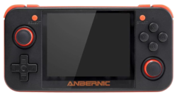
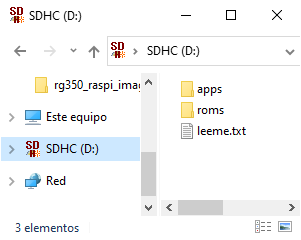
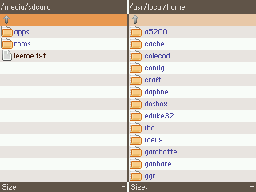
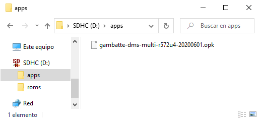
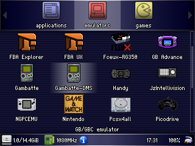
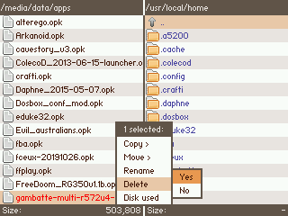
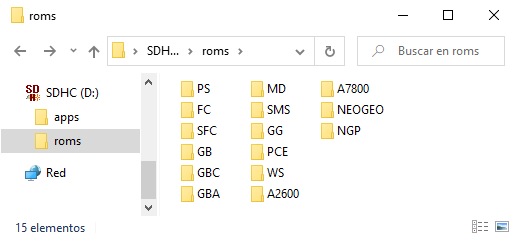
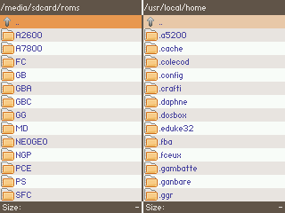

RG350 Primeros pasos

En este artículo vamos a tratar las dudas iniciales que se suelen tener cuando se comienza con esta consola. En este documento ya se encuentran descritos unos cuantos conceptos y respondidas algunas preguntas frecuentes, pero aquí vamos a centrarnos en las dudas iniciales, es decir las que suelen surgir nada más sacar la consola de la caja.
Instalación/actualización de emuladores/OPKs¶
De fábrica la consola suele venir con muchos emuladores instalados, aunque no suelen ser las versiones más actualizadas. Así pues, una de las primeras inquietudes suele ser la de actualizar los emuladores preinstalados o añadir otros nuevos. Lo primero sería entender el formato de los mismos. En el documento general sobre RG350 ya se comenta algo sobre ello. Aunque no es obligatorio, la mayoría de los emuladores los vamos a encontrar en formato OPK. Es la forma más sencilla y conveniente para distribuir aplicaciones de cualquier tipo en el sistema operativo de la consola (OpenDingux). Los OPKs son ficheros únicos que internamente contienen todos los ficheros que necesita el emulador (ejecutables, configuraciones, imágenes, sonidos, etc.). Así pues si queremos actualizar por ejemplo el emulador de Game Boy, simplemente tenemos que localizar el fichero OPK y copiarlo a la consola (más adelante diremos dónde).
¿Dónde encontramos los ficheros OPK?¶
Desafortunadamente, el concepto tan habitual en otros sistemas de tienda de aplicaciones, en OpenDingux no existe. Bueno, el primer intento serio de montar algo equivalente es el trabajo de Rafa Vico integrado en las últimas versiones de ROGUE, pero vamos a suponer que aún no tenemos acceso a ello (ya que requiere haber instalado este sistema y disponer de un adaptador Wifi funcional).
Así pues nos va a tocar localizar por nuestra cuenta los OPK. Normalmente, siendo una consola/sistema de concepción "open", el código de los emuladores suele estar publicado en repositorios de código como GitHub. Por ejemplo en el caso del emulador de Game Boy, uno de los más populares es Gambatte, cuyo repositorio de código se encuentra aquí. Si acudimos a la sección releases del repositorio, encontraremos algunas compilaciones del código hechas por su autor para varias máquinas. En concreto la adecuada para RG350 sería ésta:
Así pues el primer paso para actualizar el emulador Gambatte sería bajar el fichero anterior.
¿Dónde/cómo instalo el fichero OPK del emulador que he bajado?¶
En estos momentos tendremos un fichero de nombre gambatte-dms-multi-r572u4-20200601.opk en la carpeta Descargas de nuestro ordenador. Tenemos que copiarlo a una de las dos tarjetas microSD que puede utilizar la consola. Aunque nada impide copiarlo a casi cualquier lugar, existen un par de directorios especiales para contener OPKs que nos conviene utilizar. Son los siguientes:
- Tarjeta interna:
/media/data/apps - Tarjeta externa:
/media/<nombre_sd>/appsen BASE (el sistema que trae la consola de fábrica) o/media/sdcard/appsen ROGUE.
Por simplicidad, a partir de ahora vamos a utilizar la nomenclatura de ROGUE, es decir la ruta /media/sdcard. En caso de utilizar BASE sustituir por /media/<nombre_sd>, siendo <nombre_sd> el nombre o label que hayamos dado a nuestra SD.
Lo que tienen de especial estos dos directorios es que son los que rastrea el launcher de la consola (el programa que utilizamos para explorar/ejecutar los emuladores y aplicaciones instaladas) para mostrarnos su contenido. De estas dos opciones, la más sencilla es la segunda, es decir copiar el OPK a la tarjeta externa. ¿Por qué? Por dos motivos:
- La tarjeta se puede extraer fácilmente (al menos en el modelo normal de RG350, es la única de las dos tarjetas que podemos extraer sin abrir la tapa trasera de la consola).
- El formato de la tarjeta externa puede ser de tipo FAT, es decir legible por cualquier sistema operativo (Windows, Linux, Mac).
Antes de continuar hay que comentar aunque sólo sea brevemente, que la tarjeta externa se "monta" en el Linux de la consola en la ruta /media/sdcard. Así, cuando pinchemos la tarjeta en el ordenador veremos en la raíz directamente lo que en la consola veríamos en esa ruta. Lo mostramos con varios ejemplos (suponemos que la tarjeta se pincha en un Windows y que ésta adopta la letra de unidad D:):
| Ruta en OpenDingux | Ruta en PC |
|---|---|
/media/sdcard/apps |
D:\apps |
/media/sdcard/apps/gambatte-dms-multi-r572u4-20200601.opk |
D:\apps\gambatte-dms-multi-r572u4-20200601.opk |
/media/sdcard/roms |
D:\roms |
/media/sdcard/roms/GB/donkey_kong.gb |
D:\roms\GB\donkey_kong.gb |
/media/sdcard/leeme.txt |
D:\leeme.txt |
Lo mismo visto de forma gráfica (a la izquierda lo que vemos en el PC y a la derecha en la RG con la aplicación DinguxCmdr):
 
Para terminar con el ejemplo de la instalación de la última versión de Gambatte, este sería el lugar donde copiaríamos el fichero sobre la tarjeta externa montada en el PC:

Si ahora expulsamos la SD del PC y la insertamos en la RG350, debería aparecer un nuevo icono en el lanzador:

Como vemos, ahora aparecen dos iconos para el emulador Gambatte, el que había instalado originalmente en la tarjeta interna y el que acabamos de incorporar a la externa. El emulador original debe encontrarse en la ruta indicada al principio de la tarjeta interna dedicada a la instalación de OPKs, es decir /media/data/apps. Si queremos deshacernos de él lo haremos utilizando DinguxCmdr, localizando dicha ruta y borrando el fichero desde el menú que aparece al pulsar la tecla X:

¿Hay algún sitio dedicado a recopilar repositorios de emuladores?¶
Como comentábamos al principio, el repositorio de emuladores y aplicaciones más evolucionado actualmente es la App Store incluida en las últimas versiones del Custom Firmware ROGUE. Aunque no tengamos acceso a ella, podemos explorar manualmente la base de datos que utiliza por debajo esta aplicación acudiendo al siguiente repositorio:
Otra opción sería recorrer el README de estos dos repositorios que se suelen actualizar frecuentemente con las rutas de los repositorios y OPKs de los emuladores y aplicaciones más importantes para OpenDingux:
Un último lugar donde localizar OPKs es el siguiente sitio:
La última opción sería simplemente buscar en Google o en webs temáticas sobre el sistema o la consola como:
Instalación de ROMs¶
La instalación de ROMs es similar a la de emuladores pero con menos restricciones. Podemos copiarlas a cualquier directorio con permisos de escritura de la tarjeta interna y/o externa. Los dos puntos del sistema de archivos de la consola donde se montan las dos tarjetas con permisos de escritura son los siguientes:
- Tarjeta interna:
/media/data - Tarjeta externa:
/media/sdcard
Por tanto las ROMs las podremos copiar a cualquier lugar al nivel de los dos directorios anteriores o cualquiera de sus subdirectorios. Al igual que con los emuladores, resulta más cómodo copiarlos a la tarjeta externa. En este caso, aunque no es obligatorio (como sí lo era con los emuladores u OPKs en general que debían ir en un subdirectorio apps) se recomienda por organización crear un directorio llamado roms en la raíz de la tarjeta externa (cuando la montamos en el PC) y colocar dentro de él las ROMs de los distintos sistemas con un directorio propio para cada uno de ellos. Por ejemplo:
 
Una vez que hayamos insertado la microSD en la ranura externa de la consola, encontraremos el directorio roms y su contenido montado en la ruta /media/sdcard/roms del sistema OpenDingux. Al abrir un emulador, la mayoría de ellos nos mostrará un explorador de ficheros para recorrer el árbol de directorios del sistema. Como vemos en el siguiente video tendremos que seguir la ruta indicada anteriormente. La entrada con dos puntos (..) permite subir en el árbol de directorios hacia arriba:
Una vez abierta una ROM, la próxima vez que lancemos el emulador recordará la ruta de las ROMs de ese sistema.
Para terminar, un buen tutorial en video:
¿Merece la pena actualizar el firmware y/o instalar ROGUE?¶
Esta es una de las primeras cuestiones que se suelen plantear los nuevos usuarios de la consola.
Lo primero que hay que tener en cuenta es que a pesar de que la consola tiene una arquitectura bastante abierta, el kernel o núcleo del sistema operativo Linux, difícilmente se puede mejorar sin especificaciones detalladas del SoC o chip principal de la máquina, el procesador MIPS Ingenic JZ4770. Por tanto lo ideal sería que el firmware evolucionara con apoyo oficial del fabricante de dicho chip. Sin este apoyo, las mejoras que podremos encontrar en firmwares alternativos serán cosas como las siguientes:
- Cambios o adición de aplicaciones auxiliares (lanzadores de aplicaciones, exploradores de archivos, conectividad, etc.).
- Cambios de versión o adiciones de módulos Buildroot (sistema para componer el puzle de piezas del firmware).
- Mejoras estéticas.
El kernel es lo que da soporte al hardware específico de cada máquina, por lo que la dificultad para "meterle mano" que comentábamos antes limitará el avance en este aspecto. Cosas como:
- Soporte HDMI y salida AV.
- Soporte de aceleración gráfica por hardware.
Actualmente existen dos ramas de desarrollo del firmware:
- BASE: La oficial.
- ROGUE: De Ninoh-FOX.
BASE prácticamente no ha avanzado desde que salió la consola. Casi se podría decir que ha retrocedido, ya que alcanzó la versión 1.7 de dicho firmware pero poco después fueron eliminadas las versiones 1.6 y 1.7 tras ser encontrados varios problemas. Actualmente la versión más actual es la 1.5.1 con fecha 2019-10-27. Puede encontrarse aquí: Imagen + Update
Existe también una versión de BASE con soporte para el HDMI, pero no tengo claro si es oficial o si es suficientemente estable (a pesar de lo que diga la página de descarga). Puede encontrarse aquí.
En cuanto a ROGUE, todas las versiones publicadas junto al detalle de las mejoras introducidas pueden encontrarse en GitHub aquí. Una lista de las mejoras más destacadas podría ser la siguiente:
- Ligero overclock del procesador a 1080MHz (la velocidad normal es 1000MHz).
- Posibilidad de seleccionar la velocidad del procesador para cada emulador entre 360MHz y 1080MHz.
- Dos modos de visualización de previews de las ROMs (pantalla completa o en esquina superior derecha).
- Se eliminan errores en el sistema de archivo de las dos particiones de la tarjeta interna.
- Aplicaciones adicionales:
- Clock: Rediseño.
- RG350Test: Aplicación de test de controles muy mejorada respecto a la oficial.
- ScriptRunner: Aplicación para ejecutar scripts de distinta utilidad como formatear tarjetas o hacer backups.
- ROGUE Connect: Mejoras en la aplicación oficial GCW-Connect para administrar la conexión a internet con un pincho Wifi.
- ROGUE Update Manager: Aplicación para gestionar las actualizaciones de ROGUE por Wifi.
- ROGUE App Store: Aplicación para gestionar la descarga y actualización de emuladores y juegos (ports).
- Pixel Fixer: Para tratar de recuperar pixeles vagos de la pantalla.
- Actualización de librerías SDL2 (mejora la compatibilidad de algunos juegos).
- Soporte de más formatos para la tarjeta externa (ext2 y exFAT).
Como vemos las mejoras de ROGUE son numerosas, pero si nos fijamos son casi todas algo accesorias, es decir no producen mejoras en la experiencia de juego (salvo el overclock) sino en la gestión que podemos hacer con la consola preparándola para ejecutar nuevos juegos o emuladores. Comento esto para valorar adecuadamente la conveniencia de actualizar y evaluar los riesgos de proceder con el cambio. La consola no se puede brickear, dado que no tiene almacenamiento flash en la propia placa. Todo está en la microSD interna, por lo que todos los problemas se solucionan flasheando correctamente esta tarjeta con un sistema válido (sea el que sea). A pesar de ello, el proceso puede resultar complicado o confuso si no se ha flasheado antes una tarjeta SD. Además, al menos en el modelo normal de la consola, hay que desatornillar la tapa trasera para acceder a la microSD interna.
Mi consejo sería mantener el firmware BASE durante las primeras semanas al menos, para no tener impedimentos claros para optar a la garantía en caso de que aparezcan problemas. Aunque el modelo M no es necesario abrirlo, si queremos flashear la tarjeta de la ranura INT, vamos a tener que romper igualmente el precinto de garantía. Si se tienen dudas sobre el proceso de flasheo, aprovechar ese tiempo para ir conociéndolo consultando foros o leyendo lo que sigue a continuación.
Actualización del firmware¶
Como hemos comentado antes, a fecha de publicación de este artículo, la única opción para actualizar el firmware de RG350 es ROGUE. Este custom firmware ofrece tres formas para ser instalado. Dos de ellas no requieren extraer la tarjeta interna (y por tanto en el modelo normal ni siquiera será necesario abrir la consola). Se detallan en este documento, pero vamos a repetirlo aquí para no perder el hilo de este artículo:
| Tipo | Descarga | Descripción |
|---|---|---|
| Update | RG350 RG350M |
Es una aplicación OpenDingux, por tanto se ejecuta desde la propia consola. No formatea, sino que sustituye los archivos que han cambiado en el nuevo firmware respecto de un sistema anterior. Recomendable para no perder ajustes de usuario, aunque dependiendo de la versión del sistema de partida puede no quedar del todo fino. Se recomienda utilizar esta opción sólo para actualizar entre versiones de ROGUE, es decir si se parte de BASE, hay que utilizar una de las dos siguientes (preferentemente la última). |
| Flasher | RG350 | Es una aplicación OpenDingux, por tanto se ejecuta desde la propia consola. Formatea completamente la SD interna con el nuevo firmware por lo que se pierden ajustes del usuario. Recomendable para solucionar problemas en updates que no han quedado bien. En este video se ilustra todo el procedimiento. |
| sd_image.bin | RG350 RG350M |
Es una imagen para flashear la tarjeta interna desde un ordenador. Es parecida a la opción 2 y la única que sirve si se parte de un sistema que no arranca. La imagen ocupa más porque es un volcado de todo lo que contiene la SD (incluidos los espacios vacíos de la tarjeta). El proceso incorpora la complejidad adicional de tener que utilizar algunas utilidades poco habituales, y en el modelo normal de la consola, además el tener que abrirla para extraer la microSD interna. En este video (en inglés) se ilustra todo el procedimiento. La primera parte de este otro vídeo también muestra el proceso, esta vez en español. |
Así pues, para la primera actualización (y posteriores) se puede utilizar cualquier método. Dependiendo de la situación es más recomendable uno que otro. En general empezar por la opción 1, si no queda bien pasar a la 2 y si tampoco queda bien o no es posible utilizarlo porque la consola no arranca, usar el método 3.
De la experiencia de muchos usuarios pasando de BASE a ROGUE se puede deducir que si no se utiliza el tercer método es muy fácil acabar teniendo problemas. Parece que tiene que ver con que la tarjeta Toshiba que trae la consola de fábrica no es de buena calidad. La recomendación mayoritaria es apartar esa tarjeta dejándola con el firmware BASE (para reponerla además en caso de que aparezcan problemas, para así tener con qué comparar) y utilizar el método 3 (flasheo convencional) sobre una tarjeta microSD nueva de calidad.
Si al final nos decidimos a dar el paso, en este documento se ofrecen detalles sobre el proceso de flasheo. De nuevo los repetimos aquí para mantenernos centrados en este post:
- En el modelo normal, abrir la consola. El tornillo inferior izquierdo tiene encima un sello que no se puede despegar entero; se desintegra. Sólo hay que tener cuidado con no partir el cable de la batería por darle un tirón. Es perfectamente normal que se descuelguen los gatillos L y R. No pasa nada, nos ocuparemos de ello justo antes de cerrar.
- Sacar la SD rompiendo un nuevo sello que no se puede despegar de una pieza. Sale a cachos. Si no se ha flasheado anteriormente la tarjeta interna por otros medios, se recomienda apartarla, es decir guardarla como está y flashear otra tarjeta. Las recomendaciones para la tarjeta son que tenga 16GB class 10. Sería suficiente con una tarjeta de 4GB, ya que el sistema ocupa menos de 1GB, pero tarjetas de esa capacidad ya no se suelen encontrar y de hacerlo, lo más probable es que sea una tarjeta vieja y lenta.
- Bajar la imágen que queremos flashear. Existen dos ramas (para el caso de ROGUE consultar la tabla pocos párrafos más arriba):
- Instalar uno de estos programas:
- Montar la tarjeta elegida para flashear en el PC con un adaptador o lector.
- Utilizando el programa del punto 4 flashear la imagen (hay quien recomienda formatear antes pero considero que confunde el proceso más que otra cosa). En este documento de la fundación Raspberry Pi se detallan los pasos para flashear una imagen de sistema para esta placa. El proceso es idéntico en RG350 (cambiando la imagen naturalmente).
- Expulsar la SD del ordenador.
- Pinchar en la RG y cerrarla cuidando de que encajen bien los gatillos L/R.
Desde Linux el paso 6 de la lista anterior se puede hacer con este comando desde consola (adaptando el nombre del dispositivo si en nuestro sistema es distinto):
$ sudo dd if=sd_image.bin of=/dev/mmcblk0 bs=2M
Utilización de la tarjeta externa¶
Otro aspecto que suele generar dudas es el manejo de la tarjeta externa.
En primer lugar comentar las capacidades y formatos recomendados. Así como no nos tenemos que preocupar por el formato ni la estructura de directorios de la tarjeta interna, ya que estas dos cosas se construyen adecuadamente durante el proceso de flasheo, en la tarjeta externa somos nosotros los responsables tanto de formato como de contenido. En cuanto a formato, hay que recordar que recién comprada, toda tarjeta suele venir formateada con formatos FAT. Tarjetas pequeñas suelen venir en FAT32 y las más grandes en el formato exFAT más moderno. Esto es importante porque BASE sólo soporta FAT32, por lo que si tenemos este firmware y hemos comprado una tarjeta grande, tendremos que forzar su formato a FAT32. En Windows es posible formatear la tarjeta pulsando con el botón derecho del ratón sobre la unidad y seleccionando Formatear.... Según la versión de Windows, es posible que no nos aparezca FAT32 entre las opciones de formato disponibles. En ese caso deberemos recurrir a utilidades de terceros como SD Memory Card Formatter.
En cuanto al tamaño de la tarjeta, hay usuarios que han conseguido utilizar tarjetas de hasta 256GB, aunque lo recomendado oficialmente es 128GB como máximo.
Finalmente vamos a hablar de la estructura de directorios o carpetas. Sólo hay un directorio sensible, es decir que tenga que estar en un determinado lugar y con un nombre concreto y es apps. Debe estar situado en la raíz de la tarjeta (cuando está montada en el ordenador). En este directorio es donde tendremos que copiar los OPKs de las aplicaciones (emuladores, ports, utilidades, actualizaciones de firmware, etc.) que queramos instalar en la consola a través de la tarjeta interna. Volver sobre el apartado ¿Dónde/cómo instalo el fichero OPK del emulador que he bajado? de este mismo documento para obtener más detalles.
El uso principal de la tarjeta externa va a ser almacenar las ROMs de los distintos emuladores instalados en la consola. Las ROMs (excepto en unos pocos emuladores que exigen un directorio concreto que además en ocasiones se encuentra en la tarjeta interna), pueden estar almacenadas en cualquier directorio (lo que incluye la tarjeta interna). Esto es así porque la mayoría de los emuladores, muestran un explorador de ficheros (semejante al cuadro de diálogo Abrir de casi cualquier aplicación de ordenador) que nos permitirá localizar las ROMs estén donde estén. A pesar de ello suele ser habitual organizar las ROMs por sistema dentro de un directorio roms en la raíz de la tarjeta externa. Los sistemas se suelen identificar con acrónimos como éstos:
- A2600: Atari 2600
- FBA: Final Burn Alpha
- FC: NES (por Famicom)
- GB: Gameboy
- GBA: Gameboy Advance
- GBC: Gameboy Color
- GG: SEGA GameGear
- MD: SEGA Megadrive
- NEOGEO: Neo Geo
- NGP: NeoGeo Pocket
- PCE: PC Engine / TurboGrafx-16
- PS: Sony PlayStation
- SFC: SuperNES (por Super Famicom)
- SMS: SEGA MasterSystem
- WSC: WonderSwan